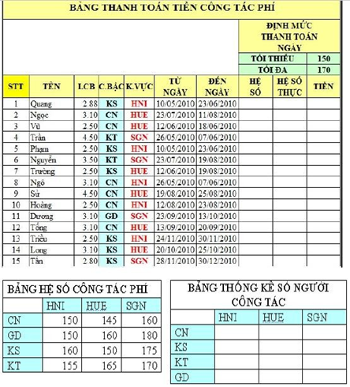

Bài tập Excel 12:
Nhập và trình bày bảng tính như sau:

Yêu cầu:
Câu 1: Cột HỆ SỐ dựa vào C.BẬC (cấp bậc), K.VƯC (khu vực), và BẢNG HỆ SỐ CÔNG TÁC PHÍ. (không dùng INDEX, sử dụng VLOOKUP kết hợp hàm IF)
Câu 2: Tính toán cột HỆ SỐ THỰC (Chú ý Bảng định mức thanh toán theo ngày là nếu HỆ SỐ >170 thì lấy 170; nếu HỆ SỐ <150 thì lấy 150)
Câu 3: Cột TIỀN = Số ngày công tác * HỆ SỐ THỰC * LCB
Câu 4: Tạo bảng thống kê số người công tác theo chức vụ và khu vực
Câu 5: Dùng Subtotal để thống kê tổng tiền cho từng nhóm khu vực công tác.
Câu 6: Tạo Header có nội dung: Bài tập Excel (canh trái). Tạo Footer có nội dung: Khoa CNTT – TRƯỜNG ĐẠI HỌC CÔNG NGHỆ GIAO THÔNG VẬN TẢI (canh phải).